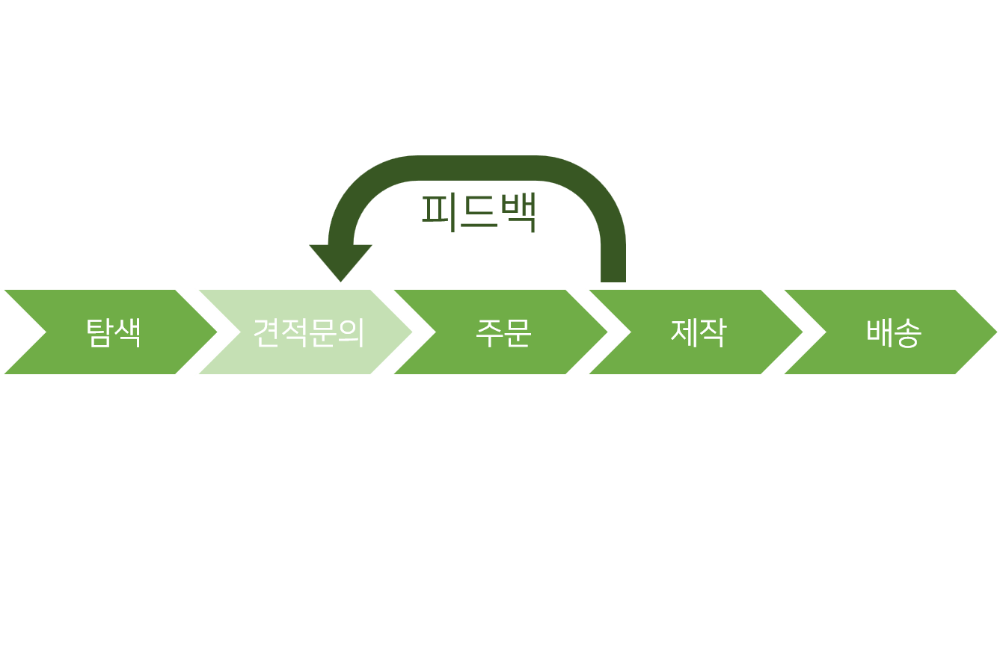

제작 과정
보통의 제작 과정은 다음과 같은 순서로 이루어집니다
먼저 탐색은, 소비자가 제작하고 싶은 상품을 탐색하는 과정을 말합니다. 보통 인터넷 서칭을 통하여 원하는 종류의 상품을 소량 제작하는 업체를 찾습니다. 키워드는 '굿즈 소량 제작', '소량 제작 업체' 등이 있습니다. 가끔 소량 제작을 많이 해 본 사람이 블로그 등에 포스트로 정리해 둔 글이 있으니 참고하면 도움이 될 것입니다. 참조
주문하고 싶은 상품을 골랐으면, 필요에 따라 홈페이지의 연락처나 게시판을 이용하여 상품의 제작 가부나 비용, 시간 등을 알아보기 위해 견적 문의를 넣습니다. 이 과정은 (특히 소량 제작에서는) 생략하는 경우도 많습니다.
상품을 주문하기로 정한 후에는 주문을 넣어야 합니다. 소량 제작 업체에서는 업체에 따라 제작에 필요한 도안을 포토샵, 일러스트 등의 파일이나 JPG, PNG 등의 이미지 파일, 또는 업체에서 지원하는 폰트와 삽입 내용 등의 도안을 요구합니다. 이러한 도안의 규격은 보통 상품 상세 설명란에 기재 되어있으므로 꼼꼼히 확인하여 만들면 됩니다. 요즘에는 이미지의 배경을 제거해주는(소위 '누끼 따는') 사이트들도 간단히 찾을 수 있고, 어떤 사이트는 아예 디자인 툴을 제공하기도 합니다. 물론 포토샵 등의 전문적인 툴이 있으면 좋겠지만, 이런 업체들은 이미지 파일 또한 받는 경우가 많으니 너무 걱정하지 않으셔도 괜찮습니다.
주문, 결제 후 도안까지 보내고 나면, 업체에서 간혹 연락이 올 때가 있습니다. 도안의 해상도가 낮아 제작 시 품질에 문제가 있거나, 도안의 사이즈를 잘못 설정하였을 경우가 많습니다. 도안을 보내기 전에 상품 상세설명란에 기재된 규격을 잘 확인하기 바랍니다.
이러한 도안의 문제를 해결하고 나면 업체에서 제작이 진행됩니다. 이후에는 일반적인 상품의 주문과 같이 배송이 오기 때문에 특별히 알아야 할 점은 없습니다.
도안 제작
많은 사람들이 도안 제작에 있어 어려움을 겪습니다. 그래서 여기에 몇 가지 알아야 할 점과 팁을 적으려 합니다.
- [크기]
- -cm/mm
- -px
- [색깔]
- -RGB
- -CMYK
- [파일 형식]
- -jpg/jpeg
- -png
- -tif/tiff
- -psd
- -AI
- [도안에 관하여]
- -재단 여분
- -n도 인쇄
일상에서 많이 사용하는 단위입니다. 보통 도안 크기 표기는 mm단위로 되어있습니다.
디지털 파일에서 많이 사용되는 것을 볼 수 있습니다. 핸드폰 카메라 등으로 찍은 사진이 1024x560 크기라고 표시될 때, 이 숫자는 px단위를 나타냅니다. 포토샵 등의 툴을 사용해 보았다면 익숙한 단위일 것입니다. mm와 px 단위의 크기 변환이 필요하다면 해상도를 알아야 합니다. 인터넷에 mm px 변환기를 검색하면 계산 사이트를 쉽게 찾을 수 있습니다.
디지털 파일에서 기본으로 사용하는 색 표현 방식입니다. Red, Green, Blue를 의미합니다. 빛의 혼합방식으로, 색이 섞일수록 밝아집니다. 사진이나 이미지를 저장했을 때 기본값에 따라 RGB로 저장됩니다.
잉크의 색 표현 방식입니다. Cyan, Magenta, Yellow, Key를 의미합니다. 물감과 같이 색이 섞일수록 어두워집니다. RGB에 비하여 나오지 않는 색이 많고 탁하게 나오는 경향이 있습니다. 잉크에 따라 색의 편차가 있습니다. 최근에는 RGB 색에 가깝게 프린팅 되는 곳도 존재하나, 여전히 CMYK버전 도안을 요구하는 경우가 많으며 RGB색과 차이가 많이 나기도 하기 때문에 잘 확인하여야 합니다. 보통은 포토샵 등을 이용하여 변환하지만, CMYK변환 프로그램을 서칭하면 RGB 이미지 파일을 CMYK로 변환해주는 사이트를 찾을 수 있습니다.
png형식과 함께 가장 많이 사용되는 파일 형식입니다. 투명색이 지원되지 않습니다.
jpg는 압축률이 높은 대신 파일의 손실이 있는 데 반해, 여러번 재다운로드를 하여도 손실이 발생 하지 않고 투명색이 지원되기 때문에 도안 저장시, (특히 배경이 없는 이미지 저장시) 주로 사용합니다.
보통 흑백 이미지나 고해상도 이미지를 사용해야 할 때 요구됩니다.
포토샵 파일 저장 형식입니다. 색을 인쇄하기 전에 흰색을 인쇄하는 아크릴 등의 인쇄에는 레이어(층)가 분리된 포토샵 파일을 많이 사용합니다.
어도비 일러스트레이터 파일 저장 형식입니다. 벡터 기반 저장 형식이기 때문에 벡터가 지원되는 psd와 함께 화이트 인쇄, 칼선, 로고 등 선과 면을 주로 사용하며 깨지지 않아야 하는 작업에 주로 사용됩니다.
사이트를 찾다보면 도안의 작업사이즈와 재단사이즈(실제 크기)가 다른 것을 쉽게 볼 수 있습니다. 이는 인쇄 후 잘라낼 때 수작업으로 하는 것이 아니고 여러 장을 한 번에 오려내기 때문에 가장자리가 잘려나가는데, 이를 대비하기 위한 것 입니다. 가장자리의 이미지는 인쇄 후 재단 과정에서 잘려나갈 수 있기 때문에 가능하면 꼭 인쇄되어야 하는 부분은 재단선 안쪽으로 넣도록 합시다.
인쇄 사이트에서 흔히 볼 수 있는 옵션 중 하나가 1도 인쇄, 4도 인쇄, 6도 인쇄 등 입니다. 숫자 하나 당 색이 하나로, 단색인쇄는 1도인쇄, CMYK는 4도입니다. 간혹 6도 인쇄 등을 지원하는 업체도 있는데, 이는 CMYK인쇄의 색의 한계를 보완하기 위해 다른 색의 잉크를 첨가하여 색을 더욱 풍부하게 인쇄해주는 것입니다. 물론 색이 많이지면 보통 가격이 비싸집니다.